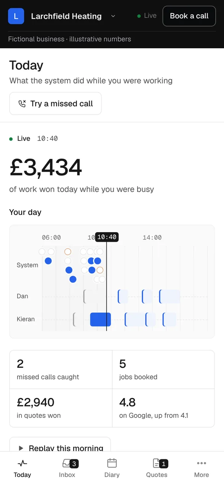
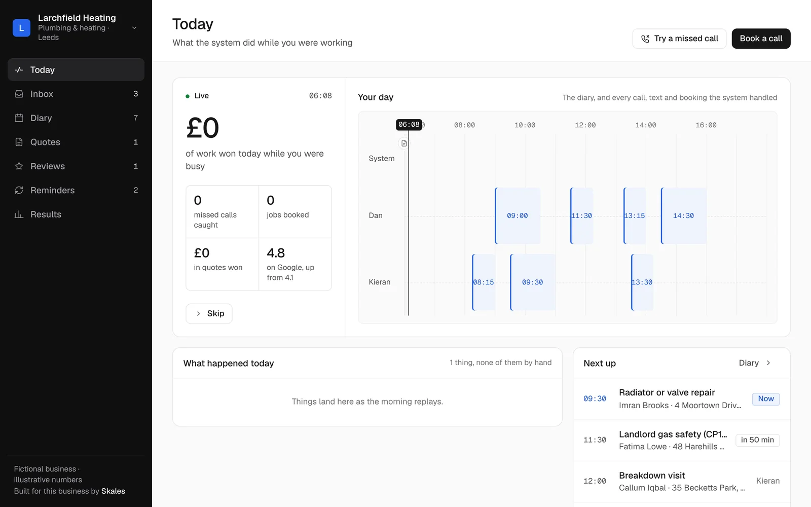
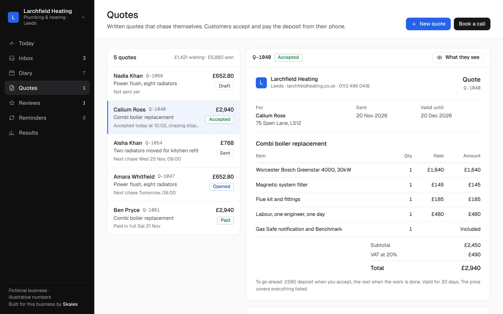
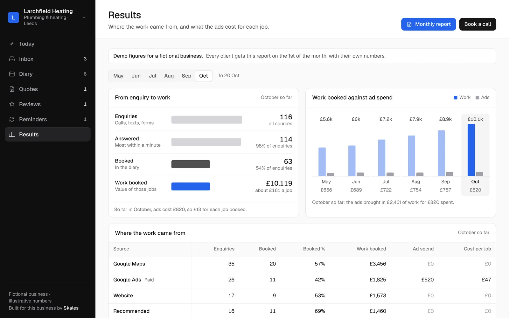

The admin between your tools, done for you.
Business automation connects the tools you already use so the work moves on by itself: an enquiry becomes a card in the CRM, a booked job lands in the diary, a finished job sends its invoice, and a paid invoice asks for a review. It is set up once, in your name, and nobody copies anything from one screen to another again.

What is included?
- Every enquiry in one place, wherever it came from.
- Booked jobs in the diary and on the board without retyping.
- Invoices sent when a job is marked done.
- Unpaid invoices chased on a schedule you set.
- Review requests sent once an invoice is paid.
- Your records kept up to date as the work moves.
- Built on the tools you already use, where they allow it.
- Everything set up in your name, written down and easy to change.
What can be automated?
Anything you do the same way every time between two tools. New enquiries from your website, Google and missed calls into one place. Booked jobs into the diary and onto the board. Invoices out when a job is done, chasers when they are not paid, receipts filed for the accounts. Each one is a step you would otherwise do by hand at the end of the day.
How is this different from follow-up automation?
Follow-up automation is the texts your customers get. Business automation is the work behind them: moving the job from one tool to the next, so the right text goes at the right time and your records are already up to date. Most builds use both.
What if my tools do not talk to each other?
Most of the tools trades use can be connected, from accounts software to calendars and forms. Where one cannot, there is usually a simple way round it, such as an email it already sends. We go through what you use on the call, and I tell you straight what can and cannot be joined up.
Try it on your phone
Live demos with a made-up business. You play the customer, then see what the business sees. About a minute each.
Running on this site
Working builds for made-up businesses. Open any of them on your phone and use it.

The systemOne screen: every call caught, every job booked, and what still needs you.The system · six made-up businesses
Quotes that chase themselvesQuotes from your price list that chase themselves until the customer answers.The system · six made-up businesses
Results and adsWhere every job came from, what it was worth, and what the ads cost per job.The system · six made-up businessesBusiness automation: questions people ask
Do I need the Skales CRM for this?
No. Automations can run between the tools you already use. The CRM helps when your work is spread across texts, notes and an inbox, because it gives everything one place to live.
Can I change an automation later?
Yes. Every automation is written down in plain English when it is set up, and any of them can be changed or paused with a message to me.
What happens if a step fails?
Each automation is built to tell you when a step fails, such as a tool being down, rather than failing quietly, so a job never goes missing without anyone knowing.
How much does business automation cost?
It is quoted flat after a short call, depending on how many tools and steps are involved. Some tools charge their own monthly fee, and you will know what those are before anything starts.
More in every question, answered.